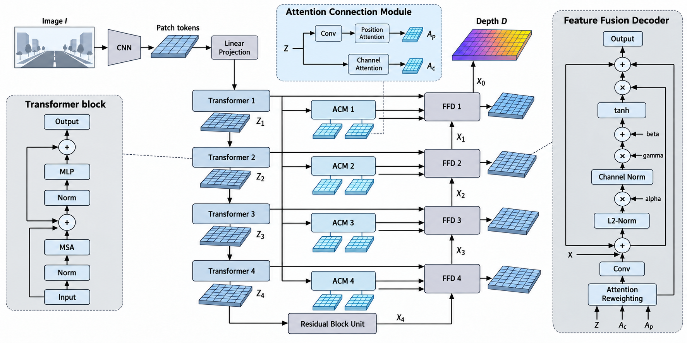
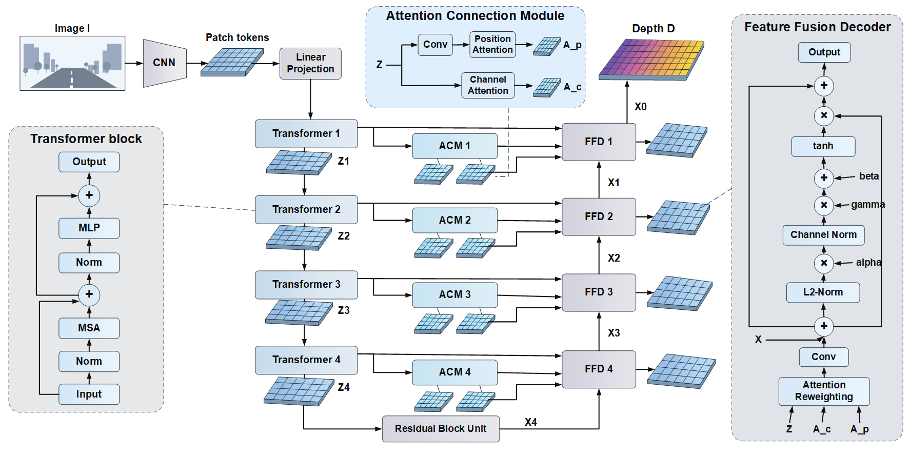
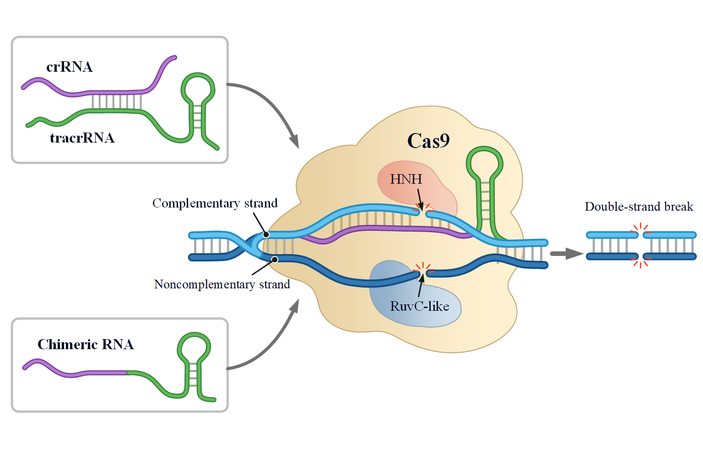
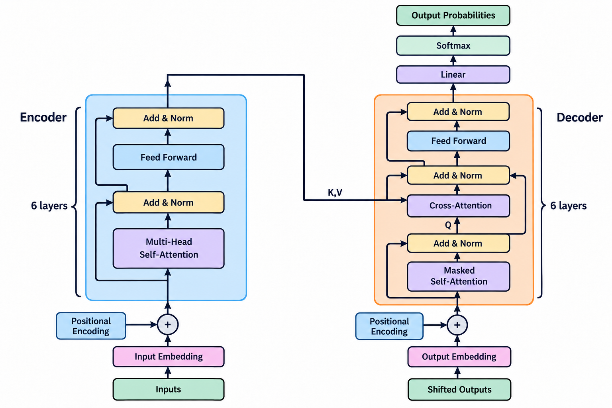
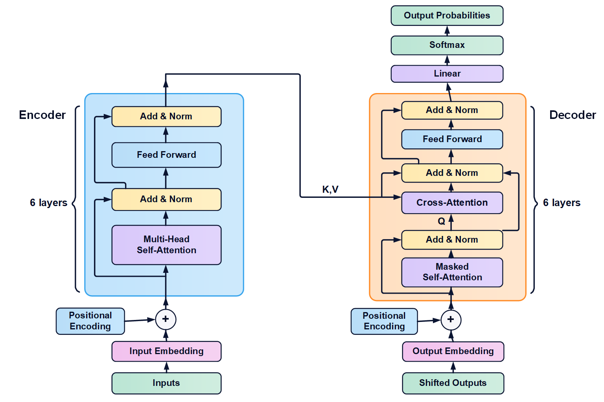
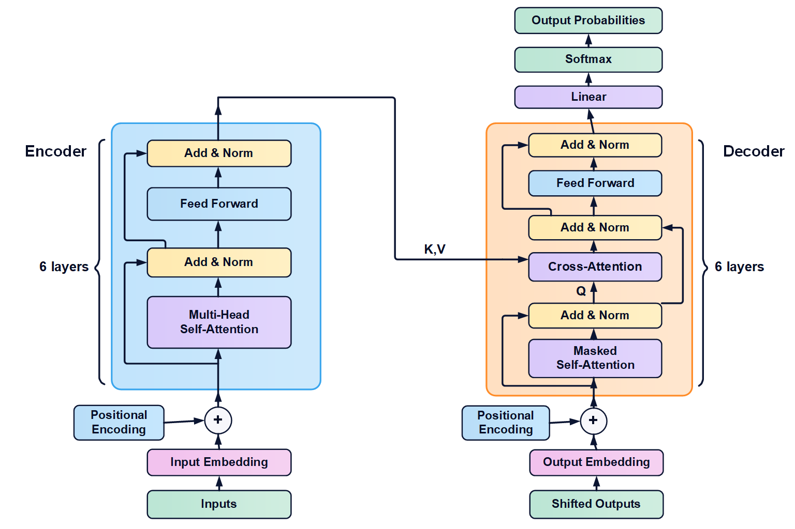

light-visio-diagram · 实测对照
三组参考图均来自实际生图测试；MonoFormer 为本轮依据用户参考新写提示词并生成。本页 Visio 图片均为保存、重开后的实际导出。原生结构、视觉忠实度与科学关系分别评估。
全流程 · 新提示词、生图、复杂架构复现
以用户上传的图为复杂度与视觉参考，读取 MonoFormer 论文后使用 light-diagram-prompt 写提示词，实际生图两轮，再重建四级网络、斜视网格与三个放大模块。第二轮生成图仍有旁路及连接歧义，Visio 中分开保留按图复现与科学关系修正两页。




查看第 1 页忠实复现与原图的叠加对照
此处叠加的是保留源图问题的第 1 页，用于比较视觉位置；修正页的有意差异另作科学检查。0 为原生成图，100 为 Visio 导出，数值只是透明度。


原生图仍有街景细节、网格配色、字体与下标等差异，尚非逐像素 1:1。第 2 页删除额外旁路、改正源端反向箭头、接回四条 ACM 输出并消除跨级竖线歧义。原生检查通过不等于两次生图的科学检查通过。
进阶 · CRISPR–Cas9 自由轮廓与曲线
蛋白轮廓、RNA/DNA 骨架、配对线、切口和文字均可分别编辑。渐变与双色描边近似原图质感；蛋白表面纹理及细小几何仍有差异。



叠加查看位置差异
滑块只改变 Visio 图的透明度，不是相似度评分。0 为参考图，100 为 Visio 导出。
当前复合组件未自动分组；全原生不代表拖动一个边框时所有内部曲线都会跟随。此例为概念切割图，未声称覆盖真实分子构象。
基础 · Transformer 架构
同一份 Visio 文件含两页：第 1 页按参考图复现，第 2 页移除 K,V 进入中间 Add & Norm 的额外支线。科学修正与忠实复现明确分开。




叠加查看位置差异
第 2 页 · 科学关系修正版

测试日期：2026-10-30 · 桌面 Visio 16.0。以上是三个案例的同一助手实测，无独立盲评，尚未覆盖所有学科、复杂三维质感或多区室反馈通路。来源记录、场景与审计保存在各案例目录。